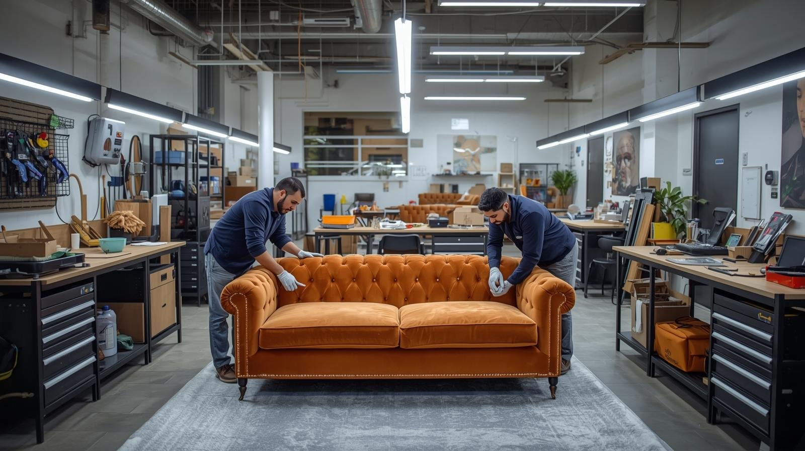
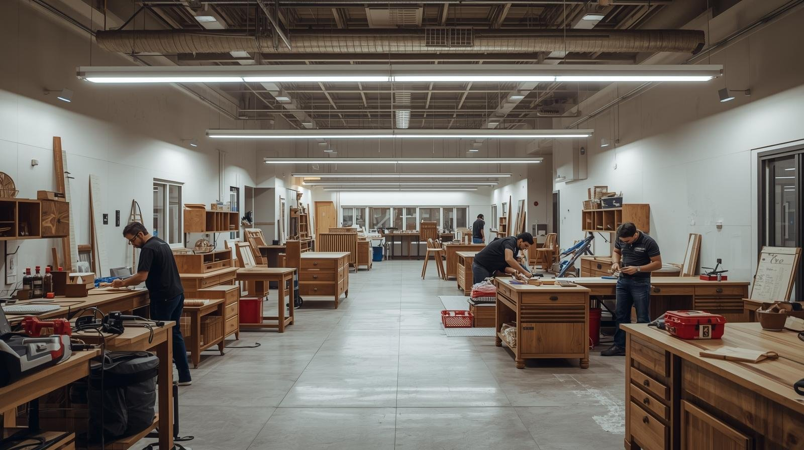

شركة صيانة العفش بالرياض 0559865517

تبحث عن شركة صيانة العفش بالرياض تقدم لك خدمة احترافية تضمن سلامة أثاثك وجودته بعد النقل أو التخزين؟ إليك الحل مع شركة نقل الرياض، الرائدة في تقديم خدمات صيانة ونقل العفش بالرياض بأعلى معايير الدقة والأمان. نحن نوفّر فريقًا متخصصًا في صيانة الأثاث بجميع أنواعه، بدءًا من إعادة تجميع القطع المفككة، مرورًا بإصلاح الخدوش والتلفيات، ووصولًا إلى التغليف الاحترافي الذي يحافظ على جودة المفروشات خلال عملية النقل أو التخزين. بفضل خبرتنا الطويلة وتجهيزاتنا الحديثة، نضمن لك تجربة مريحة وآمنة في كل خطوة، لأن هدفنا هو الحفاظ على ممتلكاتك وكأنها جديدة تمامًا.
شركة صيانة العفش بالرياض
تُعد شركة صيانة العفش بالرياض من الشركات المتخصصة في تقديم حلول شاملة للحفاظ على الأثاث وإصلاحه بعد النقل أو التخزين، حيث توفر خدمات احترافية تشمل ترميم الخشب، إصلاح المفروشات، معالجة الخدوش، وإعادة الطلاء باستخدام مواد آمنة وذات جودة عالية، تمتاز الشركة بخبرة واسعة في التعامل مع جميع أنواع الأثاث المنزلي والمكتبي، مما يجعلها الخيار المفضل للأسر والشركات في العاصمة، كما تعتمد شركة نقل الرياض على طاقم فني مؤهل وأحدث الأدوات لضمان تقديم خدمة صيانة دقيقة وسريعة تعيد لعفشك مظهره الأنيق وكفاءته الأصلية، مع توفير أسعار تنافسية تناسب جميع العملاء.
شركة صيانة و نقل العفش بالرياض
تقدم شركة صيانة ونقل العفش بالرياض خدمات متكاملة تجمع بين الدقة في النقل والاحترافية في الصيانة، لتضمن لعملائها تجربة آمنة ومريحة من البداية حتى النهاية، تهتم الشركة بتوفير حلول شاملة تشمل فك وتركيب الأثاث، التغليف الجيد لحمايته أثناء النقل، بالإضافة إلى صيانة القطع المتضررة أو القديمة باستخدام أدوات حديثة وخامات عالية الجودة، ومع فريق عمل مدرّب وخبرة طويلة في المجال، تضمن شركة نقل الرياض أن يتم نقل وصيانة أثاثك دون أي تلف أو خدوش، مع الالتزام بالمواعيد والدقة في التنفيذ لتوفير أقصى درجات الراحة والثقة لعملائها داخل مدينة الرياض.
مميزات صيانة و نقل العفش بالرياض
تتميز شركة نقل الرياض أفضل شركة صيانة العفش بالرياض بالعديد من المميزات، تتمثل في:
- فريق عمل متخصص ومدرّب على أعلى مستوى في فك وتركيب الأثاث.
- استخدام أحدث الأدوات والمعدات لضمان سلامة العفش أثناء النقل والصيانة.
- تقديم خدمة صيانة شاملة تشمل إصلاح الخدوش، إعادة الطلاء، وتبديل القطع التالفة.
- تغليف احترافي باستخدام مواد عالية الجودة لحماية الأثاث من الكسر أو الخدش.
- التزام تام بالمواعيد وسرعة في تنفيذ الخدمة دون التأثير على الجودة.
- توفير أسعار تنافسية تناسب جميع العملاء داخل الرياض.
- إمكانية النقل والصيانة لجميع أنواع الأثاث المنزلي والمكتبي.
- ضمان جودة الخدمة ورضا العملاء بنسبة عالية.
- توفر خدمة عملاء على مدار الساعة للرد على الاستفسارات وحجز المواعيد بسهولة.
- إشراف كامل من شركة نقل الرياض لضمان تنفيذ جميع المراحل باحترافية ودقة.
شركة نقل الرياض هي الافضل في صيانة و نقل العفش بالرياض
تُعتبر شركة نقل الرياض أفضل شركة صيانة العفش بالرياض لأنها تجمع بين الخبرة الطويلة والجودة العالية في تقديم خدماتها، تهتم الشركة بكل تفاصيل عملية النقل منذ لحظة فك الأثاث وحتى إعادة تركيبه في الموقع الجديد، مع الحرص على صيانة القطع المتضررة وإعادتها إلى حالتها الأصلية، كما تستخدم الشركة أدوات ومعدات حديثة لضمان النقل الآمن والتعامل الدقيق مع جميع أنواع الأثاث المنزلي والمكتبي، وتمتاز شركة نقل الرياض بفريق عمل مدرّب يتمتع بالكفاءة والسرعة في الأداء، بالإضافة إلى الالتزام بالمواعيد وتقديم أسعار تنافسية تناسب جميع العملاء، بفضل هذه المزايا أصبحت الشركة الاسم الأول الذي يثق به سكان الرياض عندما يتعلق الأمر بصيانة ونقل الأثاث باحترافية وأمان تام.
اسعار شركة صيانة و نقل العفش بالرياض
تُقدّم شركة صيانة ونقل العفش بالرياض خدماتها بأسعار تنافسية تتناسب مع جودة العمل والاحترافية المقدّمة، حيث تعتمد الشركة على مبدأ الشفافية في التعامل مع العملاء وتحديد التكلفة بناءً على نوع الخدمة المطلوبة ومسافة النقل وحجم الأثاث، وتركّز الشركة على توفير أعلى قيمة ممكنة مقابل ما يدفعه العميل، من خلال تقديم خدمات دقيقة تشمل الفك والتركيب، الصيانة الشاملة، والتغليف الاحترافي. ومع التزامها بالمواعيد وجودة التنفيذ، أصبحت شركة نقل الرياض الخيار المفضل لكل من يبحث عن شركة صيانة العفش بالرياض تقدم خدمة مضمونة تجمع بين الكفاءة والسعر المناسب دون أي تكاليف خفية أو مبالغات.
كيف تتم عمليه صيانة و نقل العفش بالرياض
تتم عملية صيانة العفش بالرياض داخل شركة نقل الرياض بخطوات منظمة ومدروسة لضمان حماية الأثاث وتقديم خدمة احترافية من البداية حتى النهاية. تبدأ العملية بمرحلة المعاينة حيث يقوم فريق مختص بتقييم حجم الأثاث ونوعه لتحديد الأدوات والمعدات المناسبة. بعد ذلك، يتم فك الأثاث بعناية باستخدام أدوات مخصصة تمنع أي تلف أو خدش، ثم تأتي مرحلة التغليف باستخدام مواد قوية مثل البلاستيك الفقاعي والورق المقوّى لحماية الأثاث أثناء النقل.
عند الوصول إلى الموقع الجديد، يقوم الفريق بنقل العفش بأمان داخل سيارات مجهزة خصيصًا لهذا الغرض، ثم إعادة التركيب بطريقة دقيقة تضمن استقرار كل قطعة في مكانها الصحيح. بعد ذلك، تبدأ مرحلة الصيانة التي تشمل إصلاح التلفيات البسيطة، إعادة الطلاء، وتلميع الأسطح لإعادة الأثاث إلى حالته المثالية. بفضل هذه الخطوات المتكاملة والخبرة الطويلة، تضمن شركة نقل الرياض أن تتم عملية الصيانة والنقل بسهولة وأمان تام، مع الحفاظ على جودة الأثاث وسلامته طوال العملية.

أفضل شركة صيانة العفش بالرياض
تعتبر شركة نقل الرياض من أفضل الشركات المتخصصة في صيانة ونقل العفش بالرياض، حيث تقدم خدمات شاملة تجمع بين الدقة في النقل والاحترافية في الصيانة. تعتمد الشركة على فريق عمل مؤهل ومدرّب جيدًا للتعامل مع جميع أنواع الأثاث المنزلي والمكتبي، مع استخدام أحدث المعدات ومواد التغليف عالية الجودة لضمان حماية الأثاث من التلف أثناء النقل، بالإضافة إلى ذلك، توفر شركة نقل الرياض خدمات صيانة متكاملة تشمل إصلاح الخدوش، ترميم الخشب، وإعادة الطلاء، لتعود قطع الأثاث وكأنها جديدة. بفضل هذه الخدمات الاحترافية، أصبحت شركة نقل الرياض الخيار الأول لكل من يبحث عن حلول آمنة وموثوقة في شركة صيانة العفش بالرياض، مع الالتزام بالمواعيد وتقديم أفضل تجربة للعميل.
في الختام، تُعتبر شركة نقل الرياض الخيار الأمثل لكل من يبحث عن خدمة متكاملة في شركة صيانة العفش بالرياض، حيث تجمع بين الخبرة الطويلة، الكفاءة العالية، واستخدام أحدث الأدوات والتقنيات للحفاظ على أثاثك بأفضل حالة ممكنة، من خلال الالتزام بالمواعيد، تقديم خدمات صيانة دقيقة، والتعامل مع جميع أنواع الأثاث بعناية، تضمن الشركة تجربة آمنة ومريحة لكل عملائها. لذا، سواء كنت تخطط لنقل منزلك أو مكتبك، فإن شركة نقل الرياض توفر لك الحل الأمثل لضمان جودة الأثاث وسلامته مع خدمة احترافية تلبي جميع احتياجاتك.
الأسئلة الشائعة حول شركة صيانة و نقل العفش بالرياض
ما هي الخدمات التي تقدمها شركة صيانة العفش بالرياض؟
تقدم الشركة خدمات متكاملة تشمل فك وتركيب الأثاث، التغليف الاحترافي، النقل الآمن، بالإضافة إلى الصيانة الشاملة للأثاث مثل إصلاح الخدوش، ترميم الخشب، وإعادة الطلاء.
هل تتعامل الشركة مع جميع أنواع الأثاث؟
نعم، فريق العمل مدرّب على التعامل مع جميع أنواع الأثاث المنزلي والمكتبي، بما في ذلك الأثاث الخشبي والمعدني والمنجّد، مع ضمان الحفاظ على جودة القطع وسلامتها أثناء النقل والصيانة.
هل تقدم الشركة خدمات الصيانة بعد النقل فقط أم قبل النقل أيضًا؟
توفر الشركة خدمات الصيانة قبل النقل وبعده حسب حاجة العميل، بحيث يتم إصلاح أي تلفيات قبل النقل أو إعادة تجديد الأثاث بعد وصوله للمكان الجديد.